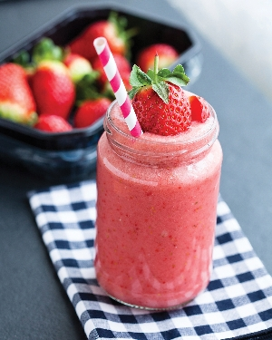

Banana extract provides this smoothie with a double dose of fruit flavor! (Source)
Strawberry smoothies are a lot of fun, but so are strawberry milkshakes! Check out this recipe if you get the chance! :]
Per Serving: 468 calories; protein 17.2g; carbohydrates 88.9g; fat 6.5g; cholesterol 29.4mg; sodium 224.4mg.
Return to Main Page